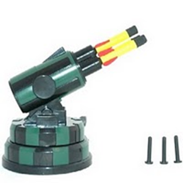
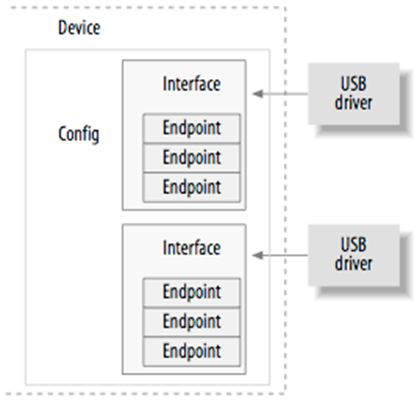
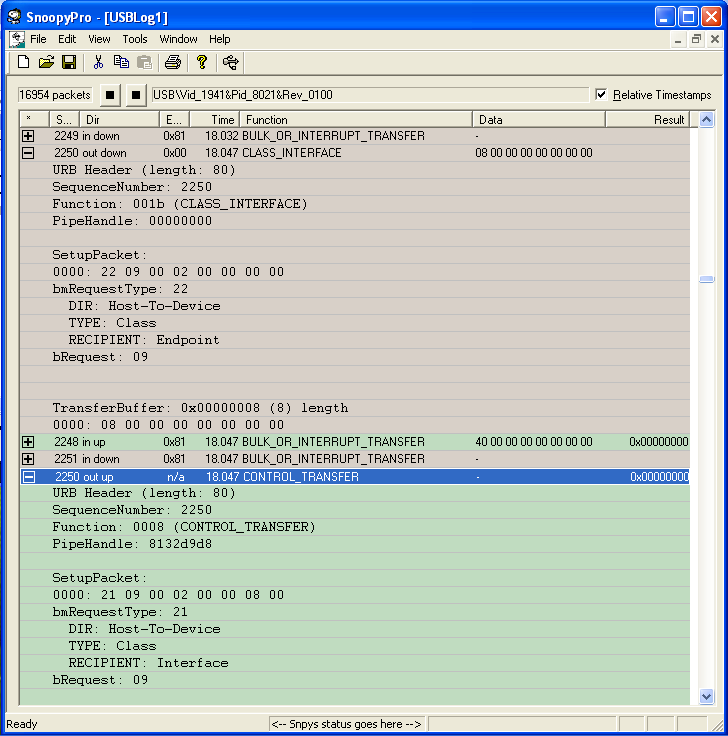
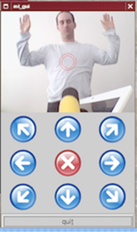

На хабре нашёл весьма интересную статью:Пишем драйвер ядра Linux для неизвестного USB-устройства
В этой статье можно ознакомится как создавать символьные устройства для Линукс, да и просто не плохая вводная часть по разработке драйверов, не плохо написано.)
В этой статье объяснен весь процесс, на выходе которого получается рабочий драйвер ядра Linux для недокументированного USB-устройства. Выполнив обратную разработку коммуникационного протокола USB, я покажу архитектуру драйвера ядра для USB. Кроме драйвера ядра в этой статье будет рассказано о простом инструменте для пользовательского пространства; при помощи этого инструмента можно управлять таким устройством. Конечно, придется углубиться в подробности, касающиеся конкретного прибора, но не сомневайтесь – описанный процесс с тем же успехом применим и к другим USB-устройствам.
❯ Введение

Как-то раз я нашел на eBay занятный прибор: USB-ракетницу DreamCheeky. Производитель не предоставил Linux-драйвера к ней, а также не опубликовал спецификацию USB-протокола. Был доступен только двоичный драйвер для Windows, а с ним ракетница превращалась для пользователей Linux в настоящий «черный ящик». Вот это задачка! Давайте заставим эту адскую машину работать под Linux.
Чтобы было проще программировать для USB, существует USB-интерфейс, доступный из пользовательского пространства при помощи libusb, программного API, за которым скрыты низкоуровневые взаимодействия с ядром. Чтобы грамотно написать драйвер устройства для этой ракетницы, пришлось бы полагаться на этот API и проигнорировать всю специфику ядра. Тем не менее, я хотел заняться именно программированием ядра, поэтому решил написать модуль ядра, несмотря на то, что это гораздо более сложный и трудозатратный процесс.
Оставшаяся часть этой статьи структурирована следующим образом. Вначале я привожу некоторые смежные работы, чтобы обрисовать контекст, а затем делаю экспресс-обзор USB. После этого я предложу вашему вниманию процесс обратной разработки: покажу, как собрать неизвестные команды USB, управляющие ракетницей. Опишу архитектуру модуля ядра, в состав которого входят выведенные мной управляющие команды. Наконец, покажу, как работать с простым инструментом пользовательского пространства; при помощи этого инструмента мы работаем с драйвером.
❯ Смежные работы
Очевидно, не мне одному довелось повозиться с этим гаджетом. Но ни в одном из описанных подходов, которые я нашел, не ставилась цель создать собственный драйвер устройства под Linux именно для ядра. В частности, для управления этой ракетницей есть приложение ncurses. Также обратите внимание на этот репозиторий с реализацией на C++. Пользователи Apple могут попробовать следующий новозеландский проект для управления USB-ракетницей. Кроме того, сохранилась библиотека pymissile, реализация на Python, поддерживающая работу с ракетницей другого производителя. Автор подружил ракетницу с веб-камерой, чтобы получился автоматический караульный прибор, реагирующий на движение. К этим занятным идеям я вернусь ниже.
❯ Азбука USB
Универсальная последовательная шина (USB) позволяет подключать к хост-машине разнообразные периферийные устройства. Шина была спроектирована для унификации самых разных старых и медленных шин (параллельных, последовательных и клавиатурных), чтобы все они были сведены к шине одного типа. Топологически она сконструирована не как шина, а как дерево из нескольких соединений точка-точка. Хост-контроллер для USB периодически опрашивает каждое из устройств, нет ли у него данных на отправку. При такой конструкции ни одно устройство не может отправить данные до того, как ему поступит явный запрос на отправку информации. Получается архитектура, замечательно приспособленная для использования в режиме PnP («подключи и работай»).

В Linux поддерживаются драйверы двух основных типов: драйверы хоста и драйверы устройств. Давайте абстрагируемся от драйверов хоста и подробнее рассмотрим USB как устройство. Как показано на рисунке, USB-устройство состоит из одной или более конфигураций, а они, в свою очередь, имеют по одному или более интерфейсов. У этих интерфейсов бывает от нуля и более конечных точек, на которых и строится USB-коммуникация в простейшей форме. Конечная точка всегда является однонаправленной и ведет либо с хоста на устройство (конечная точка типа OUT), или с устройства на хост (конечная точка типа IN). Существует четыре типа конечных точек, и каждая передает данные по-своему:
- Управляющие (control)
- Для прерываний (interrupt)
- Для сплошной передачи (bulk)
- Изохронные (isochronous)
Bus 005 Device 004: ID 1941:8021
Device Descriptor:
bLength 18
bDescriptorType 1
bcdUSB 1.10
bDeviceClass 0 (Defined at Interface level)
bDeviceSubClass 0
bDeviceProtocol 0
bMaxPacketSize0 8
idVendor 0x1941
idProduct 0x8021
bcdDevice 1.00
iManufacturer 0
iProduct 0
iSerial 0
bNumConfigurations 1
Configuration Descriptor:
bLength 9
bDescriptorType 2
wTotalLength 34
bNumInterfaces 1
bConfigurationValue 1
iConfiguration 0
bmAttributes 0xa0
Remote Wakeup
MaxPower 100mA
Interface Descriptor:
bLength 9
bDescriptorType 4
bInterfaceNumber 0
bAlternateSetting 0
bNumEndpoints 1
bInterfaceClass 3 Human Interface Devices
bInterfaceSubClass 0 No Subclass
bInterfaceProtocol 0 None
iInterface 0
HID Device Descriptor:
bLength 9
bDescriptorType 33
bcdHID 1.00
bCountryCode 0 Not supported
bNumDescriptors 1
bDescriptorType 34 Report
wDescriptorLength 52
Report Descriptors:
** UNAVAILABLE **
Endpoint Descriptor:
bLength 7
bDescriptorType 5
bEndpointAddress 0x81 EP 1 IN
bmAttributes 3
Transfer Type Interrupt
Synch Type None
Usage Type Data
wMaxPacketSize 0x0008 1x 8 bytes
bInterval 10
Общая структура этого вывода и расставленные в нем отступы характерны для типичного USB-устройства. Сначала указан производитель и идет ID продукта, однозначно идентифицирующие конкретный USB-гаджет. Эти ID используются ядром USB, чтобы определиться, какой драйвер должен быть придан данному устройству. Более того, скрипты горячего подключения (hotplug) позволяют решать, какой именно драйвер загружать, когда к машине подсоединяют конкретное устройство. Далее в конфигурационном разделе можно считывать максимальное использование питания (100 mA). Подчиненный интерфейс, очевидно, содержит одну конечную точку IN для прерываний (кроме управляющей конечной точки 0), к которой можно обратиться по адресу 0x81. Поскольку это конечная точка IN, она возвращает с устройства информацию о его состоянии. Для обработки входящих данных сперва необходимо понять тот управляющий протокол, который действует на ракетнице.
❯ Обратная разработка USB-протокола
Первым делом выполним обратную разработку (т. н. «отслеживание») коммуникационного протокола USB, по которому общается двоичный драйвер Windows. Один из возможных подходов – заключить устройство в VMware, а те данные, которыми обмениваются хост и подключенный девайс, перехватывать на хост-системе. Но, поскольку уже существует несколько инструментов для анализа USB-трафика, существует решение проще – положиться на один из них. По-видимому, самое популярное из бесплатных приложений такого рода — SnoopyPro. Как ни странно, у меня под рукой не оказалось компьютера с Windows, поэтому пришлось установить в VMware двоичный драйвер вместе с SnoopyPro.
Чтобы мы могли собрать все важные данные, касающиеся USB, а также чтобы перехватить все управляющие команды, касающиеся устройства, ракетница, пока ее наблюдают, должна совершить все возможные действия: двигаться по каждой из двух осей и по обеим осям одновременно, стрелять, перемещаться в пределах ограничивающих осей (такая ось – это линия, по достижении которой срабатывает уведомление, что далее в данном направлении ось подвинуть нельзя). При анализе дампа SnoopyPro не составляет труда обнаружить управляющие команды, посылаемые на ракетницу.
Пример: на следующем рисунке показан 8-байтный буфер передачи. При перемещении ракетницы вправо в буфере содержится 0x00000008. Когда ракетница поворачивается вверх, содержимое этого буфера меняется на 0x00000001. Очевидно, что очень просто логически вывести управляющие байты, на использовании которых построена работа ракетницы. Если на устройство не будет отправлена команда «стоп» (0x00000000), то в буфере содержится состояние последней команды. Это значит, что, получив команду «вниз», ракетница будет опускаться на штативе до тех пор, пока не получит новую команду. Если дальнейшее движение невозможно, двигатель продолжит работу, шестеренки при этом будут невыносимо скрежетать, пока не треснут.
При более тщательном рассмотрении оказывается, что буфер конечной точки для прерываний, ориентированной на IN, будет меняться в зависимости от того, какое положение устройство принимает в данный момент. Всякий раз, когда ось движения доходит до непреодолимой границы (и начинается этот невыносимый скрежет), устройство обнаруживает данную ситуацию и соответствующим образом меняет содержимое буфера прерывания. Таким образом, разработчик ядра может полагаться на эти уведомления, чтобы реализовать механизм проверки границ; этот механизм должен выдавать команду «стоп», как только ракетница «упрется в стенку».

Вот выдержка из исходного кода драйвера. В ней приведен полный список управляющих команд, которые могут быть отправлены на устройство.
Код:
#define ML_STOP 0x00
#define ML_UP 0x01
#define ML_DOWN 0x02
#define ML_LEFT 0x04
#define ML_RIGHT 0x08
#define ML_UP_LEFT (ML_UP | ML_LEFT)
#define ML_DOWN_LEFT (ML_DOWN | ML_LEFT)
#define ML_UP_RIGHT (ML_UP | ML_RIGHT)
#define ML_DOWN_RIGHT (ML_DOWN | ML_RIGHT)
#define ML_FIRE 0x10Следующие байты появляются в буфере конечной точки для прерываний (IN) – они заключены в комментариях – и свидетельствуют о достижении границ.
Код:
#define ML_MAX_UP 0x80 /* 80 00 00 00 00 00 00 00 */
#define ML_MAX_DOWN 0x40 /* 40 00 00 00 00 00 00 00 */
#define ML_MAX_LEFT 0x04 /* 00 04 00 00 00 00 00 00 */
#define ML_MAX_RIGHT 0x08 /* 00 08 00 00 00 00 00 00 */Имея на руках всю необходимую информацию об управлении, давайте воспользуемся ею при разработке и углубимся на территорию программирования для ядра.
❯ Драйвер устройства
Писать код для ядра – это своего рода искусство, и в данной статье мы можем рассмотреть лишь верхушку этого айсберга. Для более глубокого изучения темы рекомендую книги Linux Device Drivers и Understanding the Linux Kernel.
Как и во многих других дисциплинах, разделение механизма и политики – это фундаментальная парадигма, которой должен придерживаться каждый программист. Механизм предоставляет возможности, а в правилах политики выражено, как должны использоваться эти возможности. Обычно в различных средах доступ к аппаратному обеспечению также происходит по-разному. Поэтому совершенно обязательно писать код, не зависящий от политик: драйвер должен просто предоставлять аппаратное обеспечение, не налагая никаких ограничений.
Приятная черта Linux заключается в возможности динамического связывания кода объекта с работающим ядром. Такой образец объектного кода называется модулем ядра. В Linux различаются три основных типа устройств, которые может воплощать модуль:
- Символьные устройства
- Блочные устройства
- Сетевые устройства
Кроме этой классификации существуют и другие способы, принципиально иные. Например, USB-устройства можно реализовывать в виде USB-модулей, но они же могут фигурировать в качестве символьных устройств (таких, как ракетница), блочных устройств (скажем, USB-флешек) или сетевых интерфейсов (таких, как Ethernet-интерфейс для USB). Далее давайте в общих чертах рассмотрим, как устроен модуль ядра, предназначенный для работы с USB, а затем перейдем к частностям, касающимся нашей ракетницы.
C:
struct usb_ml {
/* По одной структуре для каждого подключенного устройства */
};
static struct usb_device_id ml_table [] = {
{ USB_DEVICE(ML_VENDOR_ID, ML_PRODUCT_ID) },
{ }
};
static int ml_open(struct inode *inode, struct file *file)
{
/* системный вызов open */
}
static int ml_release(struct inode *inode, struct file *file)
{
/* системный вызов close */
}
static ssize_t ml_write(struct file *file, const char __user *user_buf, size_t
count, loff_t *ppos);
{
/* системный вызов write */
}
static struct file_operations ml_fops = {
.owner = THIS_MODULE,
.write = ml_write,
.open = ml_open,
.release = ml_release,
};
static int ml_probe(struct usb_interface *interface, const struct usb_device_id
*id)
{
/* Вызывается при подключении USB-устройства к компьютеру. */
}
static void ml_disconnect(struct usb_interface *interface)
{
/* Вызывается при извлечении USB-устройства. */
}
static struct usb_driver ml_driver = {
.name = "missile_launcher",
.id_table = ml_table,
.probe = ml_probe,
.disconnect = ml_disconnect,
};
static int __init usb_ml_init(void)
{
/* Вызывается при загрузке модуля */
}
static void __exit usb_ml_exit(void)
{
/* Вызывается при выгрузке модуля */
}
module_init(usb_ml_init);
module_exit(usb_ml_exit);Не считая некоторых глобальных переменных, вспомогательных функций и обработчиков прерываний – это уже практически весь модуль ядра целиком! Но давайте разберемся с ним шаг за шагом. USB-драйвер ядра представлен структурой struct usb_driver, в которой содержатся некоторые обратные вызовы функций и переменные, идентифицирующие USB-драйвер. Когда модуль загружается при помощи программы insmod, выполняется функция __init usb_ml_init(void), регистрирующая драйвер в рамках подсистемы USB. При выгрузке модуля вызывается функция __exit usb_ml_exit(void), разрегистрирующая модуль из подсистемы USB.
Токены __init и __exit указывают, что эти функции вызываются только при инициализации и в момент выхода. После того, как модуль загружен, устанавливаются обратные вызовы функций probe и disconnect. При обратном вызове функции probe (вызывается при подключении устройства в разъем) драйвер инициализирует все локальные структуры данных, используемые для управления USB-устройством. Например, он выделяет память для структуры struct usb_ml, в которой содержится информация о том состоянии, в котором находится подключенное устройство, пока работает. Вот выдержка из начальной части этой функции:
C:
static int ml_probe(struct usb_interface *interface,
const struct usb_device_id *id)
{
struct usb_device *udev = interface_to_usbdev(interface);
struct usb_ml *dev = NULL;
struct usb_host_interface *iface_desc;
struct usb_endpoint_descriptor *endpoint;
int i, int_end_size;
int retval = -ENODEV;
if (! udev)
{
DBG_ERR("udev is NULL");
goto exit;
}
dev = kzalloc(sizeof(struct usb_ml), GFP_KERNEL);
if (! dev)
{
DBG_ERR("cannot allocate memory for struct usb_ml");
retval = -ENOMEM;
goto exit;
}
dev->command = ML_STOP;
init_MUTEX(&dev->sem);
spin_lock_init(&dev->cmd_spinlock);
dev->udev = udev;
dev->interface = interface;
iface_desc = interface->cur_altsetting;
/* Устанавливаем информацию о конечной точке для прерываний. */
for (i = 0; i < iface_desc->desc.bNumEndpoints; ++i)
{
endpoint = &iface_desc->endpoint[i].desc;
if (((endpoint->bEndpointAddress & USB_ENDPOINT_DIR_MASK) == USB_DIR_IN)
&& ((endpoint->bmAttributes & USB_ENDPOINT_XFERTYPE_MASK) ==
USB_ENDPOINT_XFER_INT))
dev->int_in_endpoint = endpoint;
}
if (! dev->int_in_endpoint)
{
DBG_ERR("could not find interrupt in endpoint");
goto error;
}
/* ... */
/* Сейчас можем зарегистрировать устройство, так как оно уже готово */
retval = usb_register_dev(interface, &ml_class);
/* ... */
}Возможно, вы заметили, что в этом фрагменте кода используются инструкции goto. Притом, что использование инструкций goto обычно порицается, разработчики ядра пользуются инструкциями goto, чтобы сконцентрировать обработку ошибок в некой централизованной точке, избавившись от сложной логики и кода, пестрящего отступами. Функция probe выделяет память для хранения внутренней структуры устройства, инициализирует семафоры и спинлоки, а также задает информацию о конечных точках. Ниже в этой же функции происходит регистрация устройства. Теперь устройство готово, к нему можно обращаться из пользовательского пространства, пользуясь для этого системными вызовами. Ниже мы обсудим простой инструмент из пользовательского пространства, через который можно обратиться к ракетнице. Но прежде я покажу вам коммуникационные примитивы, при помощи которых данные отправляются на устройство.
В качестве «носителя данных» реализация USB для Linux использует блок запросов USB (USB request block, URB), и именно с его помощью осуществляется коммуникация с USB-устройствами URB подобны информационным сообщениям, которые асинхронно отсылаются на конечные точки и с конечных точек. Существует четыре различных типа URB, таких же, как и типы конечных точек, предусмотренных в стандарте USB: управляющие, для прерываний, для сплошной передачи данных и изохронные. Как только URB выделен и инициализирован драйвером, он подлежит передаче в ядро USB, которое, в свою очередь, переадресует его на устройство. Если URB был успешно доставлен к ядру USB, то выполняется обработчик завершения. Затем ядро USB возвращает управление драйверу устройства.
Поскольку в нашей ракетнице фигурируют две конечные точки (конечная точка 0 и конечная точка для прерываний), нам приходится иметь дело с URB, предназначенными как для управления, так и для работы с прерываниями. Те команды, которые мы обратно разработали, в принципе, упакованы в управляющий URB, а оттуда направляются на устройство. Кроме того, мы непрерывно получаем информацию о состоянии из периодически срабатывающих URB для прерываний. Например, чтобы отправить в ракетницу простые данные, используется функция usb_control_msg:
Код:
memset(&buf, 0, sizeof(buf));
buf[0] = cmd;
/* Обработчик прерывания на конечной точке также модифицирует dev->command. */
spin_lock(&dev->cmd_spinlock);
dev->command = cmd;
spin_unlock(&dev->cmd_spinlock);
retval = usb_control_msg(dev->udev,
usb_sndctrlpipe(dev->udev, 0),
ML_CTRL_REQUEST,
ML_CTRL_REQEUST_TYPE,
ML_CTRL_VALUE,
ML_CTRL_INDEX,
&buf,
sizeof(buf),
HZ * 5);
if (retval < 0)
{
DBG_ERR("usb_control_msg failed (%d)", retval);
goto unlock_exit;
}Команда cmd вставляется в буфер buf, а в этом буфере содержатся данные, которые должны быть отправлены на устройство. Если работа URB завершается успешно, то выполняется соответствующий обработчик. Он не выполняет ничего экзотического, просто сообщает драйверу, что мы запустили (пока не скорректированную) команду при помощи системного вызова write:
C:
static void ml_ctrl_callback(struct urb *urb, struct pt_regs *regs)
{
struct usb_ml *dev = urb->context;
dev->correction_required = 0;
}Мы не хотим повредить аппаратную часть ракетницы, ни посылая ей неправильных команд, ни посылая вообще каких-либо команд, как только прибор «упрется» в непреодолимую граничную ось. В идеале, как только такая ось будет достигнута (то есть, ракетница не сможет больше ничуть продвинуться в данном направлении), движение в эту сторону должно прекратиться. Оказывается, обработчик завершения для URB прерываний – как раз то место, где удобнее всего реализовать эту идею:
Код:
static void ml_int_in_callback(struct urb *urb, struct pt_regs *regs)
{
/* ... */
if (dev->int_in_buffer[0] & ML_MAX_UP && dev->command & ML_UP)
{
dev->command &= ~ML_UP;
dev->correction_required = 1;
} else if (dev->int_in_buffer[0] & ML_MAX_DOWN &&
dev->command & ML_DOWN)
{
dev->command &= ~ML_DOWN;
dev->correction_required = 1;
}
if (dev->int_in_buffer[1] & ML_MAX_LEFT && dev->command & ML_LEFT)
{
dev->command &= ~ML_LEFT;
dev->correction_required = 1;
} else if (dev->int_in_buffer[1] & ML_MAX_RIGHT &&
dev->command & ML_RIGHT)
{
dev->command &= ~ML_RIGHT;
dev->correction_required = 1;
}
/* ... */
}При помощи вышеприведенного кода устанавливается переменная correction_required, от которой зависит срабатывание «корректирующего» управляющего URB: в этом URB содержится всего лишь последняя команда без вредного бита. Напомню, что функции обратного вызова URB работают в контексте прерывания и, следовательно, они не должны выполнять никаких выделений памяти, не должны удерживать семафоры или провоцировать какие-либо события, из-за которых процесс может перейти в спящий режим. При применении такого автоматического корректирующего механизма ракетница защищена от ненадлежащего использования. Опять же, на уровне политики здесь никаких ограничений не навязывается, мы просто защищаем само устройство.
❯ Управление в пользовательском пространстве
Для большинства читателей самое интересное начнется здесь. Никто еще не надорвался за разыменованием указателей на NULL, старый добрый libc также в наличии. После того, как наш модуль ядра будет загружен, ракетница доступна по /dev/ml0. В таком случае вторая ракетница отобразится как /dev/ml1 и т. д. Вот очень простое приложение для управления этим устройством:
C:
#include <fcntl.h
#include <stdio.h
#include <stdlib.h
#include <unistd.h
#define DEFAULT_DEVICE "/dev/ml0"
#define DEFAULT_DURATION 800
#define ML_STOP 0x00
#define ML_UP 0x01
#define ML_DOWN 0x02
#define ML_LEFT 0x04
#define ML_RIGHT 0x08
#define ML_FIRE 0x10
#define ML_FIRE_DELAY 5000
void send_cmd(int fd, int cmd)
{
int retval = 0;
retval = write(fd, &cmd, 1);
if (retval < 0)
fprintf(stderr, "an error occured: %d\n", retval);
}
static void usage(char *name)
{
fprintf(stderr,
"\nusage: %s [-mslrudfh] [-t msecs]\n\n"
" -m missile launcher [/dev/ml0]\n"
" -s stop\n"
" -l turn left\n"
" -r turn right\n"
" -u turn up\n"
" -d turn down\n"
" -f fire\n"
" -t specify duration in milli seconds\n"
" -h display this help\n\n"
"notes:\n"
"* it is possible to combine the directions of the two axes, e.g.\n"
" '-lu' send_cmds the missile launcher up and left at the same time.\n"
"" , name);
exit(1);
}
int main(int argc, char *argv[])
{
char c;
int fd;
int cmd = ML_STOP;
int duration = DEFAULT_DURATION;
char *dev = DEFAULT_DEVICE;
if (argc < 2)
usage(argv[0]);
while ((c = getopt(argc, argv, "mslrudfht:")) != -1)
{
switch (c)
{
case 'm': dev = optarg;
break;
case 'l': cmd |= ML_LEFT;
break;
case 'r': cmd |= ML_RIGHT;
break;
case 'u': cmd |= ML_UP;
break;
case 'd': cmd |= ML_DOWN;
break;
case 'f': cmd = ML_FIRE;
break;
case 's': cmd = ML_STOP;
break;
case 't': duration = atoi(optarg);
break;
default: usage(argv[0]);
}
}
fd = open(dev, O_RDWR);
if (fd == -1)
{
perror("open");
exit(1);
}
send_cmd(fd, cmd);
if (cmd & ML_FIRE)
duration = ML_FIRE_DELAY;
else if (cmd == ML_UP || cmd == ML_DOWN)
duration /= 2;
usleep(duration * 1000);
send_cmd(fd, ML_STOP);
close(fd);
return EXIT_SUCCESS;
}Этот инструмент (назовем его ml_control) позволяет пользователю отправлять данные на устройство при помощи системного вызова write. Например, если указать ./ml_control -ul -t 3000, то ракетница будет в течение 3 секунд двигаться вверх и влево. По команде ./ml_control –f она будет стрелять, а по команде ./ml_control –s – остановится. Считайте этот код просто «проверкой концепции»; разумеется, можно представить гораздо более изощренные примеры использования.

Просто для интереса я также установил на ракетницу внешнюю камеру iSight. Сам автор pymissile подсказывает, что следующий занятный шаг – реализовать функцию «часового» на основе детектирования движения. Как только в актуальном поле обзора фиксируется движение, ракетница должна сама навестись на цель и выстрелить. У меня не хватило времени на реализацию этого проекта – может быть, когда-нибудь потом вернусь к этой идее, если станет скучно. Правда, мой друг Торстен Рёдер смог быстро накропать на Qt GUI-интерфейс для этой задачи (на вид немного напоминает старенький Quake).
❯ Итоги
В этой статье я обрисовал, как создать для ядра Linux собственный драйвер, предназначенный для работы с USB-устройством. Сначала мы выполнили обратную разработку неизвестного USB-протокола; для этого воспользовались драйвером Windows, при помощи которого перехватили весь входящий и исходящий USB-трафик. Перехватив все коммуникационные примитивы, я объяснил, как собрать драйвер ядра для работы с USB. Наконец, в качестве проверки концепции мы написали инструмент для пользовательского пространства, закладывающий основы для дальнейших, более интересных идей. Далее я затрагиваю возможности развития этого проекта – например, как дополнить ракетницу камерой или устанавливать ее на другие устройства.Полная реализация данного драйвера ядра и весь код к статье выложены в моем репозитории на GitHub.